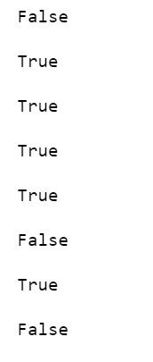

סיימתי את זה.
ואפילו מצאתי באג אחרי הבדיקה הזו.
(לא איפסתי את ה state ההתחלתי אחרי כל איטרציה של input )
תודה על הדוגמא !!!
סתם שתדעו, אני כ"כ הרבה משקיע בקורס הזה.
2 לייקים
ועוד משהוא קטנטן, חבל שאין logger’ אני משאיר את ההדפסות של הדבג מכוכבות בקוד.
הצלחתי את ה"מאתגר" וזה הדבר היחיד הלא-בסיסי שהיה בקורס והצליח לי פיקס. הגאווה בשיא!
2 לייקים
הקוד שלי עבד עבור הדוגמא שבמחברת (של הזוגי איזוגי) אבל משום מה בדוגמא החדשה של ים אני מקבל True במקום False במקום הFalse האמצעי בתשובות… לא יודעת למה 
היה לי בעייה בהתחלה שגרמה שהכל יצא TRUE, אבל יכול להיות שבגלל מימוש קצת שונה יש לך את אותה בעייה עקרונית
האם עבור כל “אות” ב-input מבוצע מעבר יחיד?
כלומר, נגיד Input של 1,2,1 האם המצב הנוכחי באוטומט זז שלוש פעמים? או שאולי זה זז קצת יותר בגלל בעייה באחת הלולאות?..
תודה בכל זאת, מצאתי את הבעיה, הלופ אצלי לא יצא בזמן
עבד לי על הפעם הראשונה, תאתגר עם יותר ממצב מקבל אחד… 

מי שרוצה לבדוק את עצמו עוד קצת, הכנתי דוגמה לאוטומט עם 2 מצבים מקבלים, שבודק האם קלט המוזן אליו הוא מספר ממשי (כל מספר עם ספרות אחרי נק’ עשרונית).
Definitions:
States: q0, q1, q2, q3, q4
Start: q0
Accepting: q3, q4
Transitions:
q0: 0, 1, 2, 3, 4, 5, 6, 7, 8, 9 -> q1
q0: . -> q2
q1: 0, 1, 2, 3, 4, 5, 6, 7, 8, 9 -> q1
q1: . -> q3
q2: 0, 1, 2, 3, 4, 5, 6, 7, 8, 9 -> q4
q3: 0, 1, 2, 3, 4, 5, 6, 7, 8, 9 -> q3
q4: 0, 1, 2, 3, 4, 5, 6, 7, 8, 9 -> q4
Inputs:
0, 2
4, 5, ., 7
1, 8, 6
., 7, 1, 3
5, 6, 9, 0
תשובות:
False
True
False
True
False
11 לייקים
תודה! עזרת לי לתקן טעות בריווח של שורה אחת, ועובד לי גם עם הדוגמה הזאת 
הדוגמאות שלכם עזרו לי לוודא שהקוד שלי עובד בצורה מושלמת 
תודה על ההשקעה
יצאו תשובות טובות, עובד מעולה
תודה רבה על הדוגמא
כמות האדרינלין והלחץ עד בן שראיתי את מה שהעלת לעד שהקוד סיים לרוץ היה משהו… אבל היה שווה לראות שהקוד עובד פיקס
לא מתחשב בבעלי לב חלש…
תודה רבה
לייק 1
מצאתי 2 טעויות בקוד שלי בעזרת הקובץ הזה - הנחתי מצב מקבל אחד בלבד, והנחתי שכל ה’הוראות’ הן מספרים בלבד. תיקנתי. הגאווה שלי - כמו שהקוד היה כתוב 1. יכולתי לראות מיד איפה הבעיה 2. שיניתי בערך 4 מילים בכל הקוד כדי לפתור את הבעיה 
3 לייקים
בדיוק כך אצלי גם! העיקר שתוקן…
תודה רבה! 
עזרת לי לתקן שגיאה אצלי בקוד 

לייק 1
איזה כיף הקוד שלי עובד גם עם הדוגמה הזו! 
תודה רבה